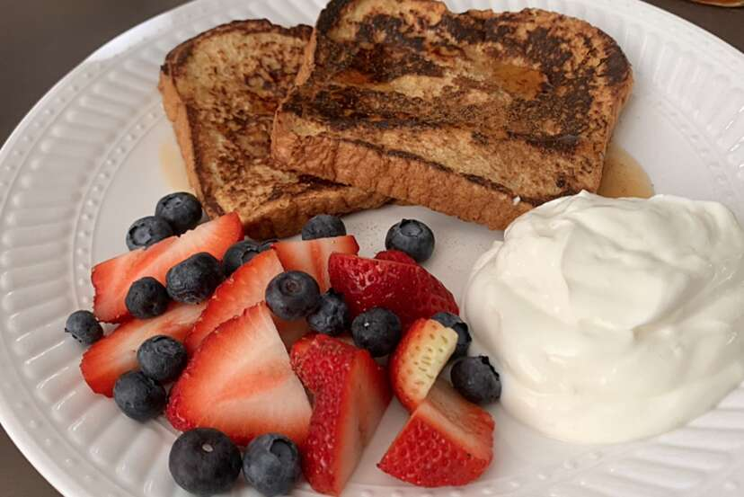

Fluffy French Toast

This recipe is one of my favorites and will quickly become one of yours. It should take approximently 30 minutes start to finish and will produce 12 servings.
Ingredients
- 1/4 cup all-purpose flour
- 1 cup of milk
- 1 pinch of salt
- 3 eggs
- 1/2 teaspoon ground cinnamon
- 1 teaspoon vanilla extract
- 1 tablespoon white sugar
- 12 thick slices of bread
Steps
- Measure flour into a large mixing bowl. Slowly whisk in the milk. Whisk in the salt, eggs, cinnamon, vanilla extract and sugar until smooth.
- Heat a lightly oiled griddle or frying pan over medium heat.
- Soak bread slices in mixture until saturated. Cook bread on each side until golden brown. Serve hot.